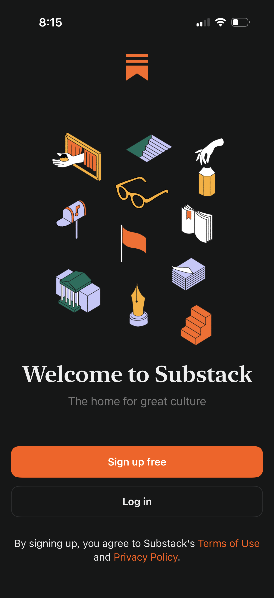
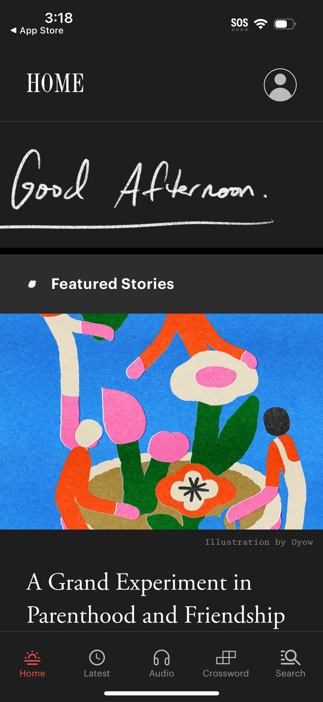
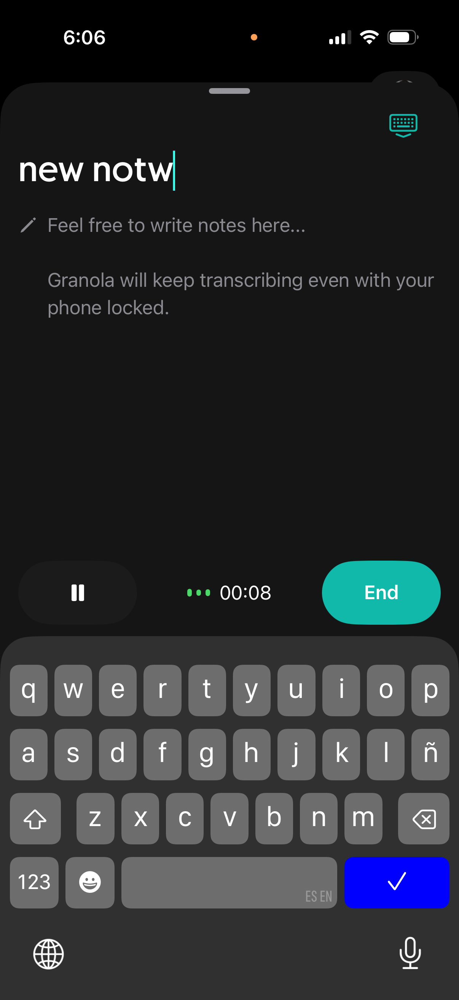
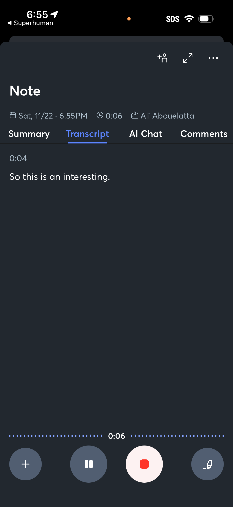
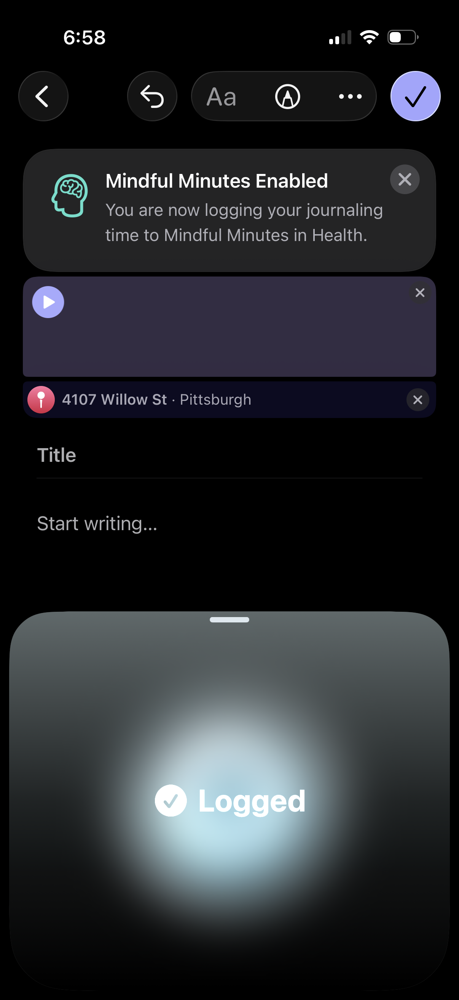
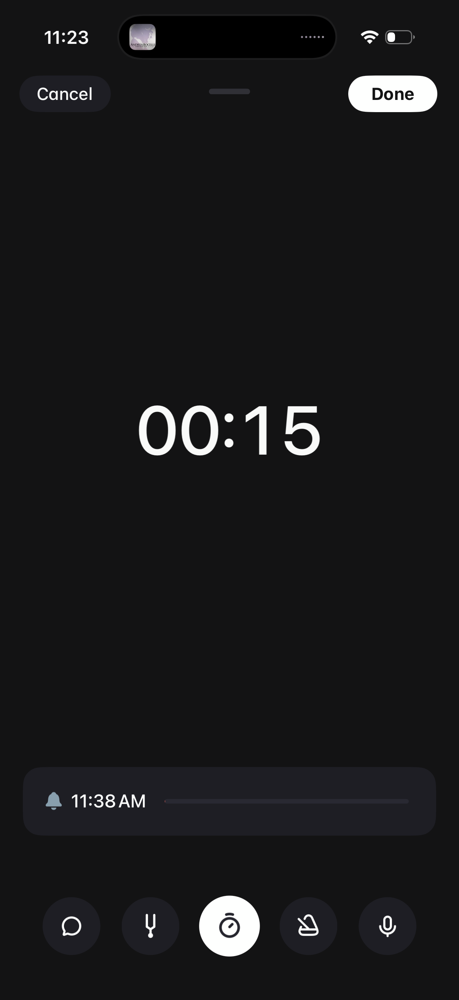
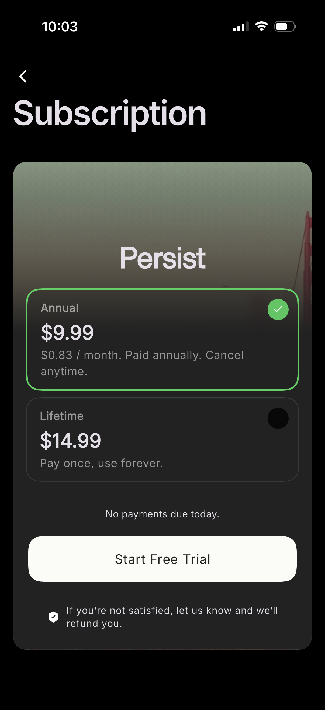

2026-05-19 · Pith Voice v1.2 · Hadger studio
Design system preview
Generated by the /design-system skill from SPEC § Design vector and 8 reference anchors (NYT, Substack, the Atlantic, the New Yorker, Granola, Otter, Apple Journal, Andante) plus 2 anti-anchors (Calm, Headspace). Editorial register: warm-minimal, considered, adult.
Mock — Today screen
Pith Voice
Tuesday, 19 May
Today · 3 min
The hour before the meeting
Talked about the conversation with Mom on the phone last night — what wasn’t said, what I was hoping she’d ask. Sat with it. Made the coffee.
momexpectationsmorning
Yesterday · 5 min
After the walk home
The thought I keep coming back to: the difference between being patient and being slow. They’re not the same.
patiencework
Record
Palette — light mode
Typography
heroSerif
The hour before the meeting
titleSerif
After the walk home
body
Pith Voice records the audio, transcribes locally, and shows a short summary — everything stays on this iPhone.
bodyItalic (live transcript)
…the thought I keep coming back to is the difference between being patient and being…
callout
Restore purchases · Privacy Policy · Terms
caption
mom · expectations · morning
captionSmall
Tuesday, 19 May
Spacing — 4-point grid
Corner radii
sm · 8
md · 12
lg · 20
xl · 32
pill
Shadows — elevation
s1
card lift
s2
modal / paywall
s3
record button
Motion — 200–300 ms ease-out
fast (180 ms) · state changes, toggles
normal (280 ms) · tab switches, modal presentation
expressive (450 ms) · paywall reveal, "Drawing the pith…" shimmer
Reference anchors (Lazyweb)
The 8 anchor screenshots that drove the token choices. Editorial register, restrained, none in the anti-pattern zone.
the-new-yorker
Magazine article detail · editorial serif hero · 0.46

substack
Onboarding · typographic restraint · 0.50

the-atlantic
Home feed · featured stories card · 0.46

granola
Voice recording + transcription · 0.60

otter
Audio playback w/ summary tabs · 0.60

apple-journal
Journal entry composer (Apple) · 0.58

andante
Minimalist voice memo · 0.53

persist
Annual + lifetime paywall · 0.43
Anti-anchors — what we are NOT
SPEC § Design vector explicitly rejects these registers. They are shown here as the boundary we keep ourselves outside of.
calm
pastel-lifestyle · "Calm-for-young-people"
headspace
cartoon illustrations · pastel gradients